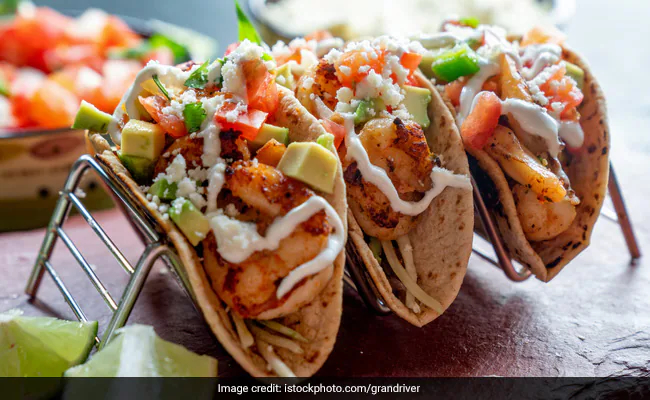

Tacos

Ingredients
- 200g paneer, cubed
- 1 tablespoon olive oil
- 1 small onion, finely chopped
- 2 garlic cloves, minced
- 1 bell pepper, chopped
- 1 teaspoon ground cumin
- 1 teaspoon smoked paprika
- ½ teaspoon chili powder
- ½ teaspoon turmeric powder
- Salt and pepper, to taste
- 8 small taco shells
- 1 avocado, sliced
- 1 cup shredded lettuce
- ½ cup salsa
- ¼ cup sour cream or yogurt (optional)
- Fresh cilantro, for garnish
- Lime wedges, for serving
Preparation
- Heat the olive oil in a skillet over medium heat. Add the chopped onions and garlic, and sauté until softened, about 2-3 minutes.
- Add the bell pepper, cumin, smoked paprika, chili powder, and turmeric. Stir well and cook for another 2-3 minutes until the peppers are soft.
- Add the paneer cubes to the skillet. Cook for 5-6 minutes, turning occasionally, until the paneer is golden and slightly crispy on the outside.
- Season with salt and pepper to taste, and remove the skillet from heat.
- Warm the taco shells according to package instructions.
- Assemble the tacos by filling each shell with the cooked paneer mixture. Add sliced avocado, shredded lettuce, salsa, and a dollop of sour cream or yogurt, if using.
- Garnish with fresh cilantro and serve with lime wedges on the side.